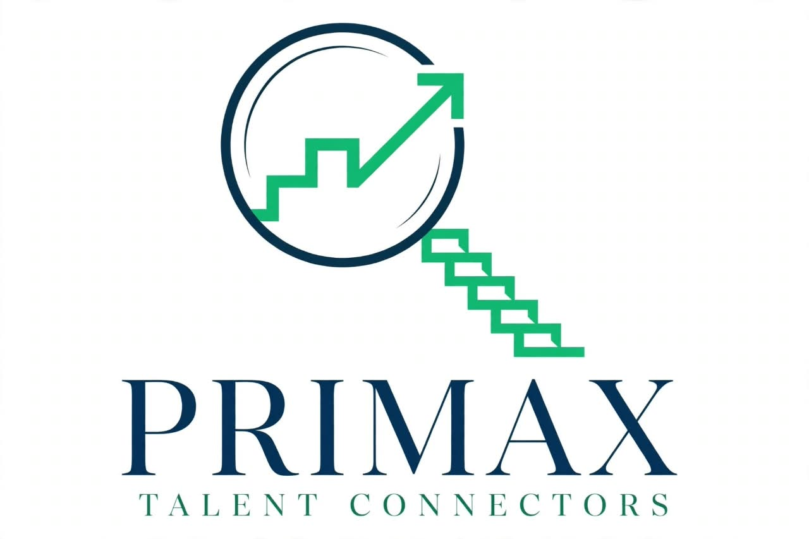
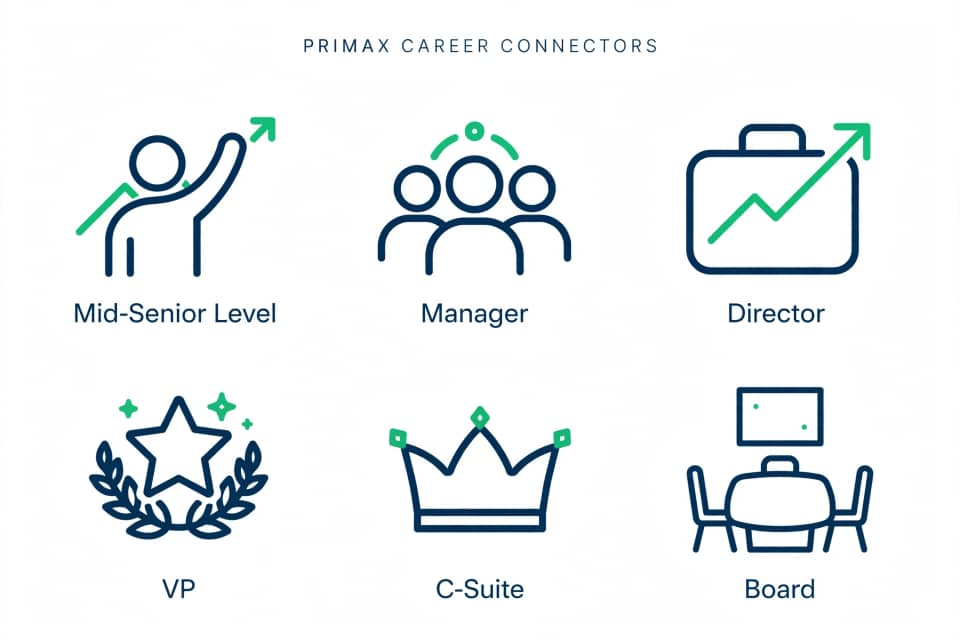

Exclusive Access
Explore select opportunities shared through our network, including roles that may not be advertised publicly.
Your career. Your next chapter.
From Mid-Senior to C-Suite, Primax Talent Connectors is a remote team of specialist connectors. We help you explore relevant opportunities and connect directly with hiring companies.
Confidential, candidate-first support. Always free to join.

A better way forward
The next step in your career deserves more than another job board search. Our connectors get to know your goals, help surface relevant roles, and make introductions to hiring companies—with your confidentiality in mind.
Explore select opportunities shared through our network, including roles that may not be advertised publicly.
Get thoughtful, human support from a remote team focused on connecting people and opportunities.
Joining the network costs candidates nothing. Your information is handled thoughtfully and presented with care.
For ambitious professionals
Share what you are looking for, and our team can keep you in mind when a relevant opportunity comes up. Primax is a connector—not the employer. Hiring companies make their own decisions and employ candidates directly.
See how it works
Explore opportunities
A sample of the kinds of senior opportunities our network may support. These editable examples are demonstrations, not verified current vacancies.
Your next chapter starts here
Tell us a little about your experience and the opportunities you have in mind. Our team will be in touch when a relevant connection is possible.
Join the Talent NetworkFor hiring teams